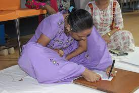

About Ila Sachani
Ila Sachani is a phenomenal artist who has redefined what is possible through sheer determination and creativity. Despite being born with a disability that prevents her from using her hands, Ila creates breathtaking artwork using her feet. Her journey is a testament to human resilience and the boundless potential of artistic expression.
Early Life and Challenges
Ila grew up in a small town, where access to resources for people with disabilities was limited. From an early age, she faced societal prejudices and physical challenges. However, her passion for art became a source of strength and hope. With the unwavering support of her family, she began to experiment with holding brushes and pencils between her toes, eventually mastering the art of painting.
Artistic Journey
Over the years, Ila developed a unique style that blends vibrant colors and intricate details. Her artwork often reflects themes of nature, human emotion, and the triumph of the human spirit. Ila’s dedication to her craft has led her to participate in numerous exhibitions, where her work has been celebrated by art enthusiasts and critics alike.
Achievements and Recognition
Ila's journey has been featured in documentaries and articles worldwide. She has received prestigious awards for her contributions to the arts, including recognition from organizations that celebrate the achievements of differently-abled individuals. Her story continues to inspire countless people to overcome their own challenges and pursue their passions.


Future Aspirations
Looking ahead, Ila dreams of opening an inclusive art academy to empower individuals with disabilities to explore their creative potential. She believes that art is a universal language that can connect and uplift people from all walks of life. Through workshops and mentorship programs, she aims to nurture the next generation of artists.